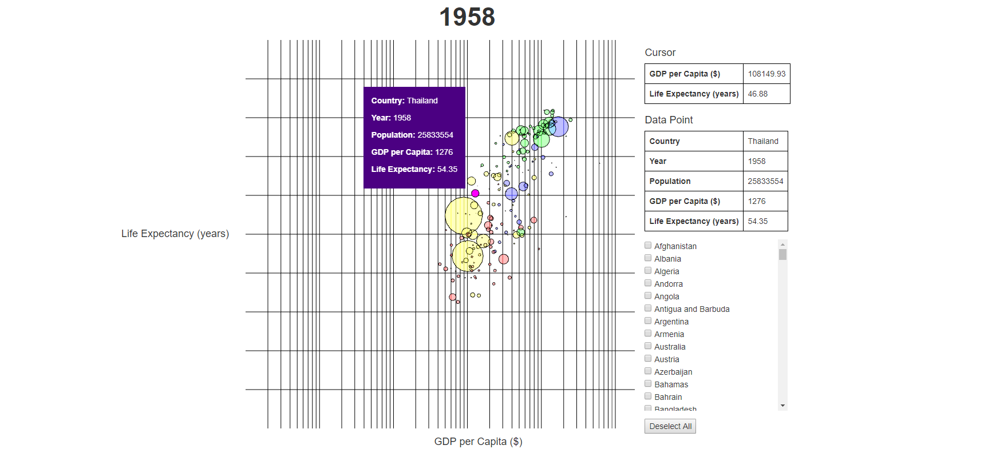

Projects
Coalide
Eons of balance have crumbled. The legendary Mount Blaze has fallen into a deep slumber, and the forest tribes have taken the chance to strike back at the coal tribes and reclaim the burnt land. Nicoal, a young coal tribe member, is left alone and devastated when the forest tribe attacks her home. She needs your help to venture past enemy territory and reunite with the other coal tribes. Her journey just might hold the key to answering why Mount Blaze abandoned her people when its people needed it the most.
Fast-paced, sumo-style game with smooth sling mechanics and quick-thinking strategic elements. Knock your enemies into the water before you meet the same fate.
Written in C++ for Android, team of 6.
EnterMistic

A deadly Plague fills the air, destroying all life in its path. Only you - the swamp druid Gorf - can stand in its way. With only your firefly companions to light the way, you must contain the Plague and save your magical familiars - lest the Plauge destroy everything you have ever known...
Strategic, fast-paced exploration game that pits you against the spreading Plague as you race to save your familiars before the Unfamiliars end you.
Written in Java and OpenGL using the libGDX framework and Box2D physics engine, team of 6.
EnterInteractive Terrain Weather Simulator

The world is your playground. Each time you visit, the land changes, rearranging itself into an entirely new landscape. Rain or snow, light or darkness, this world is yours to explore.
Explorable random terrain generator simulating rain/snow weather effects and day/night lighting with interactive camera controls.
Written in JavaScript using WebGL, team of 4.
EnterParacosmos

**HEADPHONES RECOMMENDED**
Sometimes, you just want to fly.
Endless, procedurally generated landscape designed to reflect an imaginary abstract world. Watercolor swatches lend to the atmosphere while music and parallax effect is included to enhance the experience.
Written in JavaScript using WebGL and Three.js.
EnterData Visualization

Winner of the "Create a data visualization to navigate educational standards" on Mindsumo.
A visualization of educational standards and the "cross walks" between them. This is designed as a tool to help teachers and other educational workers design well-rounded curriculums that best encompass the skills that children need to learn in order to succeed.
This visualization includes features such as hover highlighting and tooltips, collapsing/expanding, zooming, "sticky" nodes, and graph selection/toggling.
Written in HTML and JavaScript using D3.
EnterGDP vs Life Expectancy Trends
Take a look through time at the development of the world's countries and see how GDP and Life Expectancy have changed over the years and the ways in which they are intertwined.
Visualization of GDP per capita and life expectancy data, with animated time progression, tooltips, trendlines, color-coded data points, and more.
Written in JavaScript using WebGL.
Enter